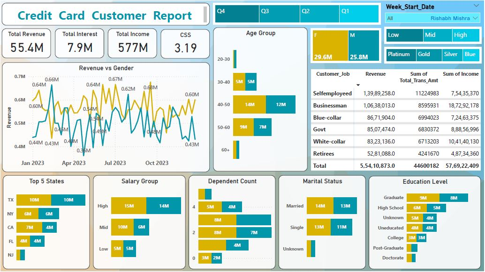

Credit Card Customer Report Analysis
Project Details
- Category : Visual Analysis By PowerBI
Overview: Credit Card Customer Report Tabs in Power BI
Here’s a detailed description of how to organize the requested insights into specific tabs and visuals in your Power BI report:
1. Total Revenue, Total Interest, Total Income
Tab Purpose Provide high-level financial metrics.
Visuals
-----Cards Show Total Revenue, Total Interest, and Total Income.
-----KPI Indicators Track changes over time.
Filters Time period, geography, and customer segments.
2. Revenue vs Gender and Age Group
Tab Purpose Analyze revenue distribution across demographics.
Visuals
-----Bar/Column Chart Revenue split by gender (Female/Male).
-----Stacked Bar Chart Revenue by age groups (e.g., 18–25, 26–40, 41+).
-----Heatmap Revenue by Gender and Age combined.
Filters Include date range, geography, and card types.
3. Week Start Date
Tab Purpose Show weekly trends in transactions.
Visuals
-----Line Chart Weekly revenue trends.
-----Clustered Bar Chart Weekly transaction count.
-----Table Week start date with associated metrics (revenue, transactions).
Filters Time period and customer segment.
4. Spending Categories: Low, Medium, High
Tab Purpose Categorize spending levels
Visuals
---Donut Chart Proportion of Low, Medium, and High spenders
---Bar Chart Revenue contribution by spending category
---Scatter Plot Spend level vs credit utilization
Filters Gender, geography, and card types
5. Card Types: Platinum, Gold, Silver, Blue
Tab Purpose Analyze performance of card tiers
Visuals
---Pie Chart Distribution of customers by card type
---Stacked Bar Chart Revenue by card type
---Table Card type with metrics (revenue, interest, late payments)
Filters Age group, gender, and spending level
---
6. Gender: Female & Male
Tab Purpose Compare customer behavior by gender
Visuals
---Clustered Column Chart Revenue, spend, and interest by gender
---Heatmap Gender vs overdue amounts
---Table Metrics segmented by gender
Filters Card type, age group, and spending category
---
7. Top 5 States
Tab Purpose Highlight geographic performance
Visuals
---Map State-wise revenue distribution
---Table Top 5 states by revenue, spend, and interest
---Bar Chart Revenue comparison for top 5 states
Filters Card type, gender, and time period
---
8. Salary Group
Tab Purpose Revenue and behavior analysis by salary range
Visuals
---Bar Chart Revenue and spend by salary group
---Stacked Column Chart Salary groups vs credit utilization
---Table Metrics for each salary group
Filters Age group, gender, and marital status
---
9. Dependent Count
Tab Purpose Impact of dependents on customer metrics
Visuals
---Clustered Bar Chart Revenue and overdue amount by dependent count
---Pie Chart Customer distribution by dependent count
Filters Salary group, marital status, and card type
---
10. Marital Status
Tab Purpose Analyze spending patterns by marital status
Visuals
---Bar Chart Revenue and spend by marital status (e.g., Single, Married)
---Pie Chart Customer distribution by marital status
---Table Metrics segmented by marital status
Filters Gender, age group, and education level
---
11. Education Level
Tab Purpose Insights based on educational qualifications
Visuals
---Bar Chart Revenue by education level (e.g., High School, Graduate, Postgraduate)
---Stacked Column Chart Education vs overdue amounts
---Table Revenue and spend for each education level
Filters Salary group, gender, and marital status
- 